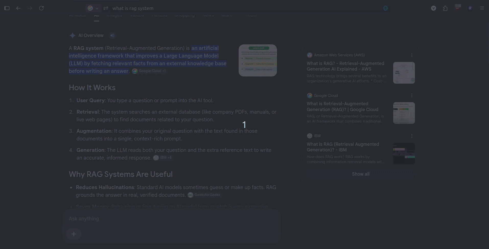

A high-speed browser extension engineered for frictionless copying and pasting. Simply select text to copy it automatically, and paste with a single middle-click or Ctrl + V—eliminating repetitive shortcut friction and making clipboard management significantly faster than traditional tools.

Copying and pasting information repeatedly can become tedious when previously copied content is no longer available.
I wanted a lightweight way to keep track of recently copied text without requiring a separate, bulky desktop application.
Captures copied text and maintains a chronological history of recent clipboard entries seamlessly in the background.
Uses browser storage to reliably maintain clipboard history across popup sessions and browser restarts.
Provides an intuitive popup interface where users can instantly view, search, and copy historical entries with one click.
Browser
│
▼
Clipboard Event
│
▼
Extension Logic
│
┌────┴────┐
▼ ▼
Storage Popup
│ │
└────┬────┘
▼
Clipboard History
ClipCycle is built using the modern WebExtensions architecture and Manifest V3 specifications.
Provides the extension with a secure, structured permission model and native browser-managed event-driven components.
The extension limits stored history strictly to the most recent 50 entries.
Prevents extension storage from growing without bounds, keeping lookup operations instant and memory footprint minimal.
The extension requests only minimal permissions strictly required for clipboard reading and local persistent storage.
Guarantees zero unnecessary broad permissions or background network telemetry, keeping clipboard data fully local.